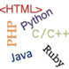
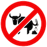

Seth Holloway
I am a technologist interested in web and mobile computing. Below is a summary of my current abilities and achievements. Items toward the bottom are more advanced skills, and skills are not related unless joined by an arrow. Simply hover over the icon and read the pop-up description for an insight into the mind of Seth Holloway.
This was created by hand using HTML, CSS, and jQuery. For a more traditional look, please see my standard resume, or for a chronological display of my achievements, please see my timeline resume.
Technical
Teamwork
Be Like Barbara Blackburn
With hours a day at the keyboard, typing is paramount. I'm a touch typist capable of 100+ WPM.
With hours a day at the keyboard, typing is paramount. I'm a touch typist capable of 100+ WPM.
Entomophobia
I hate software bugs! Over the years I've learned to debug using log statements, splitting the state space, setting breakpoints, and beyond.
I hate software bugs! Over the years I've learned to debug using log statements, splitting the state space, setting breakpoints, and beyond.
Shiny!
Shiny sells, and an elegant design helps usability. I've combined natural talent with sustained effort to improve my design skills.
Shiny sells, and an elegant design helps usability. I've combined natural talent with sustained effort to improve my design skills.
Analyze Data
Between my PhD, coursework, and several different jobs, I've become adept at presenting and analyzing data.
Between my PhD, coursework, and several different jobs, I've become adept at presenting and analyzing data.
Bugs Happen
Even the most tested code will have bugs. I've learned to deal with with intermittent bugs.
Even the most tested code will have bugs. I've learned to deal with with intermittent bugs.
Domo Arigato, Mr. Roboto
I have automated common programming functions using Ant, maven, IDE features, and various script files.
I have automated common programming functions using Ant, maven, IDE features, and various script files.
Back it Up!
Version control allows collaboration, archives changes, conserves disk space, and prevents accidental deletions. I have used SVN, Git, ClearCase, and CVS from command line and IDE. For years during grad school, I administered our SVN repo.
Version control allows collaboration, archives changes, conserves disk space, and prevents accidental deletions. I have used SVN, Git, ClearCase, and CVS from command line and IDE. For years during grad school, I administered our SVN repo.
How to Test Code
Unlock the secrets of when, how, and how much to test. Years of automated testing and quality assurance (QA) has taught me a lot about testing software. Furthermore, mentorship by TDD and test-first proponents greatly expanded my knowledge.
Unlock the secrets of when, how, and how much to test. Years of automated testing and quality assurance (QA) has taught me a lot about testing software. Furthermore, mentorship by TDD and test-first proponents greatly expanded my knowledge.
Conducting Experiments
Learn to test the whole system, its interactions and performance, and its users. Coursework, PhD studies, and industry experiences have made me very comfortable designing and conducting experiments.
Learn to test the whole system, its interactions and performance, and its users. Coursework, PhD studies, and industry experiences have made me very comfortable designing and conducting experiments.
Who Wrote This Crap?
Legacy code is pervasive, and it's rarely as good as what we would write ;-) My experience has taught me to deal with legacy code without stabbing a pen in my eye.
Legacy code is pervasive, and it's rarely as good as what we would write ;-) My experience has taught me to deal with legacy code without stabbing a pen in my eye.

Polyglot
I have used many languages and I'm fully confident that I can quickly learn others. As a teen, I was a contest programmer using Pascal and C++. In college courses I used Java, Matlab, C++, C, and Assembly. At TI I worked with DataPower and Visual Basic. IBM led me to bash and Unix command line tools, Java, PHP, and STAF/STAX (think Python wrapped in XML). My PhD was developed using Java and Ruby on Rails. This site was developed by hand using HTML, CSS, and JavaScript.
I have used many languages and I'm fully confident that I can quickly learn others. As a teen, I was a contest programmer using Pascal and C++. In college courses I used Java, Matlab, C++, C, and Assembly. At TI I worked with DataPower and Visual Basic. IBM led me to bash and Unix command line tools, Java, PHP, and STAF/STAX (think Python wrapped in XML). My PhD was developed using Java and Ruby on Rails. This site was developed by hand using HTML, CSS, and JavaScript.
Oh My God! What Does it Mean?
80% of a newcomers time is spent learning the system, so documentation and clean code is very important! Maintaining multiple jobs simultaneously has taught me the value of documentation. Luckily, I've had years to learn what works and what does not work.
80% of a newcomers time is spent learning the system, so documentation and clean code is very important! Maintaining multiple jobs simultaneously has taught me the value of documentation. Luckily, I've had years to learn what works and what does not work.
Can You Have This Done by Tomorrow?
Learning to estimate development efforts helps you and your project manager. Over the years I have improved my ability to estimate efforts in hours and lines of code.
Learning to estimate development efforts helps you and your project manager. Over the years I have improved my ability to estimate efforts in hours and lines of code.
Managing Deadlines
With deadlines looming, something has to give. A busy schedule for the past several years has given me wonderful opportunities to learn how to manage deadlines.
With deadlines looming, something has to give. A busy schedule for the past several years has given me wonderful opportunities to learn how to manage deadlines.
Communicate Effectively with Peers
Too abstract! Too concrete! Too much information! Years of practice and social grooming have helped me to express myself more clearly and concisely--a skill that is vital to avoiding frustration.
Too abstract! Too concrete! Too much information! Years of practice and social grooming have helped me to express myself more clearly and concisely--a skill that is vital to avoiding frustration.
It Takes Two (or More), Baby
We can only accomplish so much alone; ultimately, it takes a village. In my life, I've been part of several successful (and not-so-successful) teams and learned a lot about teamwork.
We can only accomplish so much alone; ultimately, it takes a village. In my life, I've been part of several successful (and not-so-successful) teams and learned a lot about teamwork.
Books Are Good, People Are Great
Finding an expert and establishing rapport yields amazing results. I understand the power of people and have become very good at seeking knowledgeable people and learning from them.
Finding an expert and establishing rapport yields amazing results. I understand the power of people and have become very good at seeking knowledgeable people and learning from them.
Trust is Earned
Trust is hard to earn yet easy to lose. Life has taught me a lot about trust, and I'm better for it.
Trust is hard to earn yet easy to lose. Life has taught me a lot about trust, and I'm better for it.
Some People Don't Share
You must learn to deal with difficult people and achieve goals. A decade working with people who cannot lose their job taught me a lot about this ;)
You must learn to deal with difficult people and achieve goals. A decade working with people who cannot lose their job taught me a lot about this ;)
Networking Means Being Nice
As I've navigated the waters of professional growth I've made my fair share of mistakes, but I have learned and grown.
As I've navigated the waters of professional growth I've made my fair share of mistakes, but I have learned and grown.
Change is the Only Constant
Change is the only constant; unfortunately, we are really bad at context-switching. For years I maintained many roles simultaneously (IBM, RA, TA, sysadmin and webmaster, president of SSE, ...), which made me very resilient and taught me how to context switch without undue frustration or performance degradation.
Change is the only constant; unfortunately, we are really bad at context-switching. For years I maintained many roles simultaneously (IBM, RA, TA, sysadmin and webmaster, president of SSE, ...), which made me very resilient and taught me how to context switch without undue frustration or performance degradation.
Gotta Rest Sometime
Before beginning work on my PhD, the task seemed impossible. I worked feverishly, accomplished a lot, and burned out. After a break I returned with newfound knowledge on how to avoid burnout.
Before beginning work on my PhD, the task seemed impossible. I worked feverishly, accomplished a lot, and burned out. After a break I returned with newfound knowledge on how to avoid burnout.

Bullshit Detector
One brief, fateful exchange taught me more about sales and how to be firm in the face of pressure than any other event. There are many opportunities to influence or be influenced; I've learned to be firm and convincing without being being militant.
One brief, fateful exchange taught me more about sales and how to be firm in the face of pressure than any other event. There are many opportunities to influence or be influenced; I've learned to be firm and convincing without being being militant.
Communicate Properly
Face-to-face? Phone? Email? SMS? Chat? twitter? By being a member of many different teams at once, I have learned a bit about communicating the right amount using the right medium.
Face-to-face? Phone? Email? SMS? Chat? twitter? By being a member of many different teams at once, I have learned a bit about communicating the right amount using the right medium.
Create an Organization
In 2008, I co-founded the Students in Software Engineering, which continues to improve the graduate school experience for current students. I have learned volumes about how to effectively create, grow, and run an organization. It has also been great fun! Thanks everyone!
In 2008, I co-founded the Students in Software Engineering, which continues to improve the graduate school experience for current students. I have learned volumes about how to effectively create, grow, and run an organization. It has also been great fun! Thanks everyone!
It's Greek to Me
There is incredible social and personal value in learning to communicate with everyone--even managers and business people! I have been to too many academic and technical outings where people quickly alienate outsiders; I strive to be more inclusive.
There is incredible social and personal value in learning to communicate with everyone--even managers and business people! I have been to too many academic and technical outings where people quickly alienate outsiders; I strive to be more inclusive.
Manage a Team
I've had the opportunity to manage a few different teams composed of undergraduate students, graduate students, professors, colleagues, and friends. I strive to be fair and lead only when needed. So far, I think I have done well and I hope others would agree.
I've had the opportunity to manage a few different teams composed of undergraduate students, graduate students, professors, colleagues, and friends. I strive to be fair and lead only when needed. So far, I think I have done well and I hope others would agree.
The Other Side of the Table
For years I was the youngest person on my team and I worked to prove myself. Sustained effort have afforded me the opportunity to be on the other side of the table a time or two. I have learned how to evaluate people and help them grow.
For years I was the youngest person on my team and I worked to prove myself. Sustained effort have afforded me the opportunity to be on the other side of the table a time or two. I have learned how to evaluate people and help them grow.
Visionary
I have had several opportunities to communicate my vision and your passion with mentors, mentees, friends, family, strangers, and anyone who will listen.
I have had several opportunities to communicate my vision and your passion with mentors, mentees, friends, family, strangers, and anyone who will listen.